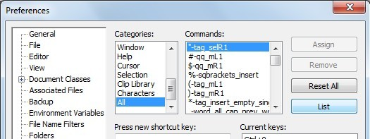
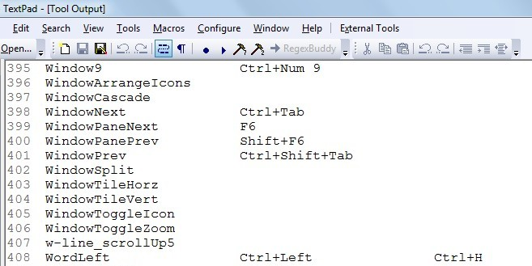
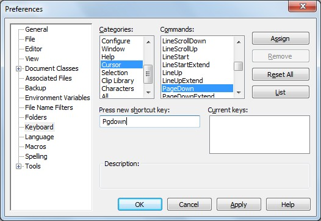
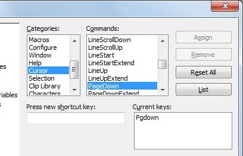
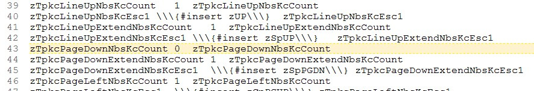

[BACK]
The TextPad built-in command (TPKC) project teaches PhraseExpress all your TextPad key-commands, allowing you to create PhraseExpress code that triggers any built-in command in the TextPad application. The TPKC project is the foundation for PhraseExpress-to-TextPad communication. While not a particularly useful project in-and-of itself, the TPKC-project (or "TPKC") is what makes it possible for all other XBN-PhraseExpress projects to function.
There are two steps necessary in order to use the TPKC-project. The first is to install it, and the second is to "build" it. The build process is what teaches TPKC your existing key-commands.
Contents:
[go] The TPKC user menu, which is used to access all major features[go] TextPad-bootstraps required by the XBNPE-TPKC project[go] Command configuration variables[go] Assigning a new key-command via user-command-configuration: Step-by-step[go] Building TPKC: Step-by-step The second-half of the TPKC installation process is "building" it.[go] All build processes (for both admins and users): Technical details[go] The TextPad all-command listPhrase-creator drop-down-menu
Source (indented):
../../textpad__tpkc/non_bootstrap_utils/z_phrase_creator_ddmenus/textpad__prefs_tpkc__pcddmenu.txt
Output (unindented):
../../textpad__tpkc/non_bootstrap_utils/z_phrase_creator_ddmenus/z_temp_folder_for_unindenting_ddmenus/textpad__prefs_tpkc__pcddmenu.px.txt
[top -- PREV / NEXT] The TPKC build-process: Step-by-stepThe TextPad built-in command (TPKC) project is not usable until it knows all the key-commands you've assigned via
TextPad > Configure > Preferences > Keyboard
This is called "building" the TPKC-project.
This section assumes that all TextPad-bootstraps have been installed, and the TPKC-project has been installed, but not yet built. Your TPKC-user-dir-id (user-dir-name) was decided during this installation process, and is required in the following steps (for example, my tpkc-user-dir-id is "jeffy"). Also note that, if you have just installed TextPad for the first time, this entire build-process can be .................. bypassed.
The first step is to generate and validate your "TextPad all-command list" (tp-all-cmd-list or tpacl). This is the initial input for the entire TPKC (user-only) build process.
(Note that the user only build processes are numbered 10 through 15. Build processes 01 through 09 are for TPKC developers [administrators] only.)
[top] TPKC data: TextPad all-command list(Ensuring tp-bootstraps for future projects (snr, ppc, etc.) are configured...consider doing it before you even print out your tpacl...)
The "TextPad all-command list" (or tp-all-cmd-list, or tpacl), is the input for building the TPKC project.
Here are the steps for creating the TextPad all-command list.
(Examples: My own tpacl, and the "TextPad fresh install" tpacl.)
Once created, but before using it to build the TPKC project, the contents of the tp-all-cmd-list must be validated. Although the TPKC-build process (build-proc-10) does the validation for you, you can also do it preventatively and directly.
There are two requirements for the content of your tpacl:
tpaclcibkcs)."zTpkcMaxNbsKCsPerCmd" Non-BootStrap (nbs) key-commands (tpaclwarnkccount).zTpkcMaxNbsKCsPerCmdNo command in your tp-all-cmd-list may have more than zTpkcMaxNbsKCsPerCmd Non-BootStrap (nbs) key-commands. This is the maximum number that any one key-command can have, after TextPad-bootstrap-kcs are deleted. Before running the build process, your tpacl still has bootstrap-kcs in it. It is therefore not possible to truly validate this until they are deleted by the build process (TPKC-build-proc-10).
The tpaclwarnkccount finds all commands in your tpacl having more than zTpkcMaxNbsKCsPerCmd key-commands, including bootstrap-kcs.
[BACK] Creating the TextPad all-command listTo generate the tp-all-cmd-list, select the "All" category in the Preferences dialog:
TextPad > Configure > Preferences > Keyboard > Categories > "All"
and then press the [List] button.

The tpacl is printed to a read-only "Tool Output" document.

[BACK] Creating the TextPad all-command list: Step 2 of 2Use File > Save As to save this output to your tpkc-user-directory (your tpkc-user-dir-name was determined when you installed the TPKC-project):
{#insert zXPROOT_DIR_tpkc}\for_v_7_0_9\user_config\[YOUR_TPKC_USER_DIR_NAME]\
Such as:
{#insert zXPROOT_DIR_tpkc}\for_v_7_0_9\user_config\jeffy\
And given this name:
textpad_all_command_list.txt
It must be saved in exactly this location, with exactly this name.
Before using this tpacl for actually building the TPKC-project, its content must be validated.
It is recommended that the following commands be used, since they are required by other XBNPE projects (those that depend on TPKC already having been installed and built). All these commands have been added to the TextPad "fresh install" tp-all-cmd-list.
.................MatchCaseClear Ctrl+Shift+Alt+F, C MatchCaseSet Shift+Alt+F, C MatchWordClear Ctrl+Shift+Alt+F, W MatchWordSet Shift+Alt+F, W RegexClear Ctrl+Shift+Alt+F, R RegexSet Shift+Alt+F, R
[BACK] Validating the TextPad all-command list: Illegal key-commandsThere are a small number of specific key-commands that will cause the TPKC-project to fail. These key-commands must be eliminated before attempting the TPKC-build-process. While the build-process itself will succeed with illegal key-commands, when it attempts to assign those key-commands, it will fail without an error message or diagnostic information.
You do not need to unassign these key-commands. Just delete them from your tp-all-cmd-list
Single keys listed in this table may not be used at all--with or without modifiers. Note also, that these are TextPad key-presses
The "tpaclcibkcs" utility checks for these illegal key-presses.
| Key or key-combination | Reason for failure |
Break,
Tab,
or Ctrl+Shift+0 |
PhraseExpress cannot input these into the "Press new shortcut key" field. |
Apps,
Enter,
and "Num 0" through "Num 9" |
PhraseExpress cannot consistently input these into the "Press new shortcut key" field. |
F1 |
PhraseExpress cannot input this key without also opening the help dialog. |
[BACK] TPKC: Build process: Master 3-of-4 (sub 10-13)The first (user-only) build-process in the TPKC-project reads your "TextPad all-command list", and el
[BACK] TPKC: Build process 10: Eliminate bootstrap-kcs from TP-all-cmd list[BACK] TPKC: Build process: Master 4-of-4 (sub 14 & 15)[BACK] TPKC: Build process 14: Create nbs-phrases from imported usr-cmd-cfg[BACK] TPKC: Build process 15: Create all-active tp-commands phrase-creator ddmenu[BACK] TPKC: Build process 11: Split nbs-only-tp-all-cmd-list into cat-cmd-lists[BACK] TPKC: Build process 12: Create raw-usr-cfg from cat-lists[BACK] TPKC: Build process 13: Create user-cmd-cfg from raw-usr-cfg[top -- PREV / NEXT] Assigning a new key-command via user-command-configuration: Step-by-stepBefore the TPKC project is fully built, the only existing built-in TextPad commands--as far as XBN-PhraseExpress is concerned--are the TextPad-bootstraps. TextPad-bootstraps are installed differently than as described in this section.
To install a new key-command (after the TPKC project is fully built), follow these steps. These instructions use this TextPad built-in command
Cursor > PageDown
and assign it this key-command
zPGDN
This is the is the x-key-press equivalent of the TextPad key-press
Pgdown
[back -- PREV / NEXT] Assigning a new key-command via user-command-configuration: Step-by-stepThe first step is to actually assign the key-command in TextPad. Go to the PageDown command in the TextPad preferences dialog
Textpad > Configure > Preferences > Keyboard > Categories > "Cursor" > Commands > "PageDown"
and type the key-command into the "Press new shortcut key" field.

[back -- PREV / NEXT] Assigning a new key-command via user-command-configuration: Step-by-stepPress the [Assign] button. Now the key-command is listed in the "Current keys" list-box. To commit this change, press the [OK] button, which also dismisses the Preferences dialog.

[back -- PREV / NEXT] Assigning a new key-command via user-command-configuration: Step-by-stepOpen the plain-text phrase-file that contains the PageDown command: For this example, it user-specific command-configuration for category "Cursor":
{#insert zXPROOT_DIR_tpkc}for_v_7_0_9\user_config\[YOUR_TPKC_USER_DIR_NAME]\output\usr_spcfc_cfg__bldproc10thr13\cursor.px.txt
For example, here is the default cursor user-config file for a TextPad "fresh installation" (for when TextPad is just installed, and no custom key-commands have been assigned). The PageDown command is about half way down the file.
Notes:

Note this file contains only the raw key-presses, and not any additional (following) sleep. Additional sleep is included only in the nbs-phrases.
[back -- PREV / NEXT] Assigning a new key-command via user-command-configuration: Step-by-stepIncrement the command's "Non-BootStrap" key-command (nbs-kc) count. Change
zTpkcPageDownNbsKcCount 0 zTpkcPageDownNbsKcCount
to
zTpkcPageDownNbsKcCount 1 zTpkcPageDownNbsKcCount
And create the phrase reflecting the just-assigned key-command:
zTpkcPageDownNbsKcEsc1 \\\{#insert zPGDN\\\}{#sleep 10} zTpkcPageDownNbsKcEsc1
Notes:
"newnbskc" utility can help create this new nbs-kc phrase. Warning: This will only work if the TextPad built-in command CharLeftExtend (zTPSelectL1c) has already been assigned a key-command.Between: For key-commands with multiple key-presses, there should be a small amount of sleep between each. There is a TPKC master-configuration-variable called
zTpkcMillsBtwMultiKeyKCs
which is automatically inserted by the TPKC "total refresh" build-process (build-proc-12)
Following: There should be a minimal amount of sleep following the key-presses, in order for PhraseExpress to wait for the command to complete. This amount of sleep should cover most situations. In extreme situations, simply append more sleep after triggering it. For example, if
zTPSelectAll
normally sleeps for 250 milliseconds after its key-command is pressed, then in an extra-long document, consider using this:
{#insert zTPSelectAll}{#sleep 250}
The default amount of post-kc sleep milliseconds is defined by the global-configuration-variable
zTpkcCrpgdDfltPostKcSlpMils
where "Crpgd" is the command's abbreviation, as defined by
zTpkcPageDownAbrv1C
[back -- PREV / NEXT] Assigning a new key-command via user-command-configuration: Step-by-stepImport the phrase-file containing the new key-command.
If the primary key-command (see "terminology") was changed (added, changed, or deleted), then processes 14 must be run again. To run it for all categories, use
zTpkc14CreateNbsPhrssAndWKcQBLsFrmUSCC
To run it for specific categories only, use
zTpkc14CreateNbsPhrssAndWKcQBLsFrmUSCCWCatPrompts
If the just-added key-command was the first for this command--that is
zTpkc*NbsKcCount) was zero, and is now one,To execute it by itself, call
zTpkc15CrtAllActvTPCmdsDDMenuFromAll
To execute both processes 14 (for all categories) and 15, use
zTpkcMasterBuild4of4
Once the phrase-file output from 14 and/or 15 is imported (assuming either needs to be run at all), the key-command is officially "installed".
[top] XBNPE-TPKC: Required TextPad-bootstrapsThe TPKC project--and therefore the entirety of XBN-PhraseExpress (excepting the XKP project)--requires the following TextPad-bootstraps to exist before installation. This list is in addition to the tp-bootstraps for the XKP project.
xhtk)zTestAllTpkcTextPadBootstrapstesttpbstpkczTestAllXkpTpkcTPBootstrapstesttpbsxkptpkc{#insert zXPROOT_DIR_tpkc}for_v_7_0_9\user_config\[YOUR_TPKC_USER_DIR_NAME]\tp_bootstraps_for_xkp_project.px.txttp_bootstraps_for_xkp_project_esc_tpk.px.txtXBN-PhraseExpress >
XBNPE: TextPad Built-in commands (TPKC) >
XBNPE-TPKC: User-specific phrases: [YOUR_TPKC_USER_DIR_NAME]| Phrase name | Built-in command name | Description |
zTPBookmarkCopyAll |
EditCopyTaggedLines |
Copies all lines currently tagged with a bookmark. |
zTPBookmarkCutAll |
EditCutTaggedLines |
Cuts all lines currently tagged with a bookmark. |
zTPBookmarkGTNext |
BookmarkNext |
Goes to the next bookmarked line, if any. |
zTPBookmarkToggle |
BookmarkToggle |
Marks the currently-UN-marked line, or un-marks the currently-marked line. |
zTPFFindDlgOpen |
SearchFiles |
Opens the "Find In Files" dialog. |
zTPFileOpen |
FileOpen |
Opens the "Open file(s)" dialog. |
zTPFindDlgOpen |
SearchFind |
Opens the "Find" dialog |
zTPFileManager |
FileManager |
Opens the "Manage Files" dialog. |
zTPFileQOpen |
FileQuickOpen |
Opens the "Quick Open File" dialog. |
zTPFindNext |
SearchFindNext |
With the find-dialog closed, finds the next search-term down. |
zTPGTDlgOpen |
SearchGoto |
Opens the "Go To" dialog. |
zTPPrefsDlgOpen |
Preferences |
Opens the "Preferences" dialog. |
zTPRplcDlgOpen |
SearchReplace |
Opens the "Replace" dialog |